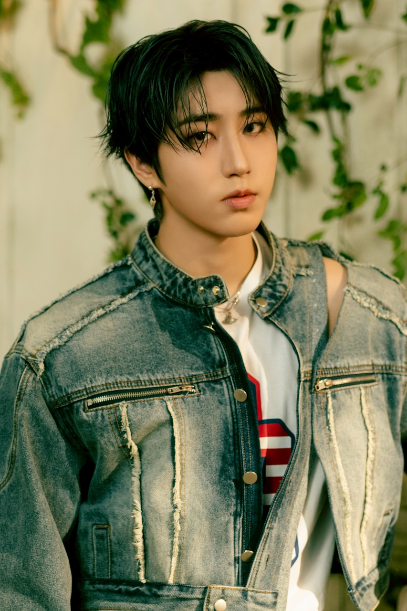

05
HAN QUOKKA

STRAY KIDS
HAN
ハン
Main Rapper / ProducerPROFILE
- 本名
- Han Jisung / 한지성
- 誕生日
- 2000.09.14
- 出身
- Incheon, South Korea
- 担当
- Main Rapper / Lead Vocal / Producer
- Producer Team
- 3RACHA(J.ONE)
- SKZOO
- HAN QUOKKA
ABOUT
Stray Kidsのメインラッパーであり、3RACHAのメンバーとして作詞・作曲・プロデュースを担当。高速ラップと感情豊かなボーカルを兼ね備え、ラップ・歌唱の両面でグループを支えるオールラウンダー。
明るくユーモアあふれる性格でメンバーを笑顔にするムードメーカー。一方で、楽曲制作では繊細な感情や自身の想いを歌詞に込め、多くの人の共感を集めている。
SKZOO

HAN QUOKKA
HANのSKZOOキャラクター。ハン本人のリスのような可愛らしいルックスや、ファンから親しまれているあだ名・特徴がキャラクターに反映されています。
RELATED SONGS
HISTORY
2000年9月14日
誕生
幼い頃から音楽が好きで、特にラップや作曲に興味を持つ。
2016年
JYP練習生
JYP Entertainmentのオーディションに合格（練習生期間は約1〜2年と短め）。
練習生時代にBang Chan、Changbinと出会い、3RACHAを結成。J.Oneとして自作曲を制作し始める。
2017年
JYPがサバイバル番組
サバイバル番組『Stray Kids』に参加。
2018年 3月25日
デビュー
正式デビュー（ミニアルバム『I am NOT』）
Ambassador
2025年頃就任
TOD'S（トッズ）
グローバルまたは地域アンバサダーとして活動（2025年頃）。
イタリアの高級レザーグッズ・ファッションブランド。ハンの洗練されたカジュアルスタイルにマッチ。
WHY STAY LOVE HIM
🐿️ 圧倒的なオールラウンダー
- 高速ラップ、安定したボーカル、そして楽曲制作までこなす実力派。どんなジャンルでも自分らしさを表現できる存在。
🎵 心に響くソングライティング
- 3RACHAとして数多くの楽曲制作に参加。自身の経験や感情を歌詞に込めた作品は、多くのSTAYの心を動かしている。
- 現状に満足せず、ラップ・ボーカル・パフォーマンスを磨き続ける努力家。常により良いステージを目指して挑戦を続けている。
❤️ STAY想い
- STAYへの感謝を何度も言葉にし、音楽を通して気持ちを届けようとするメンバー。ライブや配信では温かい言葉をかけ、応援してくれるSTAYを大切な存在として想い続けている。